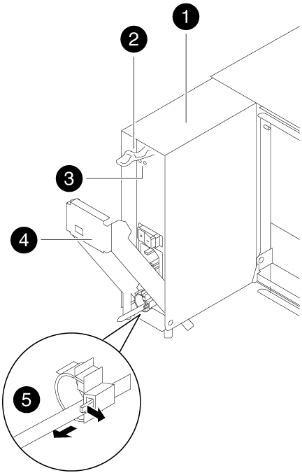
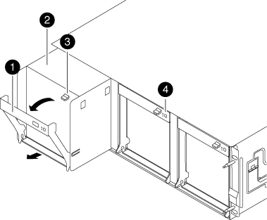
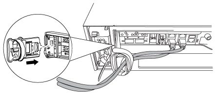
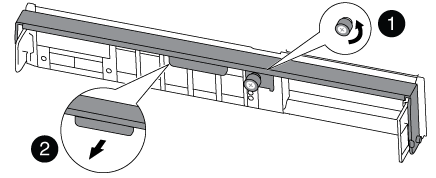

はじめに
はじめに
ハードウェア交換 - FAS8200
 変更を提案
変更を提案-
 このドキュメント ページのPDF
このドキュメント ページのPDF
PDF版ドキュメントのセット
Creating your file...
電源装置、ファン、およびコントローラモジュールを障害のあるシャーシから新しいシャーシに移動し、障害のあるシャーシを装置ラックまたはシステムキャビネットから取り外し、障害のあるシャーシと同じモデルの新しいシャーシと交換します。
手順 1 ：電源装置を移動します
シャーシを交換するときに電源装置を移動するには、電源装置の電源を切って接続を解除し、古いシャーシから電源装置を取り出して、交換用シャーシに取り付けて接続します。
-
接地対策がまだの場合は、自身で適切に実施します。
-
電源装置をオフにし、電源ケーブルを外します。
-
電源装置の電源スイッチをオフにします。
-
電源ケーブルの固定クリップを開き、電源装置から電源ケーブルを抜きます。
-
電源から電源ケーブルを抜きます。
-
-
電源装置のカムハンドルのリリースラッチを押し下げ、カムハンドルを最大まで開いて電源装置をミッドプレーンから外します。


電源装置

カムハンドルのリリースラッチ

電源 LED と障害 LED

カムハンドル

電源ケーブル固定用ツメ
-
カムハンドルをつかみ、電源装置をスライドしてシステムから引き出します。

電源装置を取り外すときは、重量があるので必ず両手で支えながら作業してください。 -
残りの電源装置に対して上記の手順を繰り返します。
-
両手で支えながら電源装置の端をシステムシャーシの開口部に合わせ、カムハンドルを使用して電源装置をシャーシにそっと押し込みます。
電源装置にはキーが付いており、一方向のみ取り付けることができます。

電源装置をスライドさせてシステムに挿入する際に力を入れすぎないようにしてください。コネクタが破損する可能性があります。 -
電源装置のカムハンドルをしっかりと押し込んで完全にシャーシに装着し、カムハンドルを閉じる位置まで押して、カムハンドルのリリースラッチがカチッと音を立ててロックされたことを確認します。
-
電源ケーブルを再接続し、電源ケーブル固定用ツメを使用して電源装置に固定します。
電源ケーブルは電源装置にのみ接続してください。この時点では、電源ケーブルを電源に接続しないでください。
手順 2 ：ファンを移動する
シャーシを交換するときにファンモジュールを取り外すには、特定の順序でタスクを実行します。
-
（必要な場合）両手でベゼルの両側の開口部を持ち、手前に引いてシャーシフレームのボールスタッドからベゼルを外します。
-
ファンモジュールのカムハンドルのリリースラッチを押し下げ、カムハンドルを下に引きます。
ファンモジュールがシャーシから少し離れた場所に移動します。

カムハンドル
ファンモジュール
カムハンドルのリリースラッチ
ファンモジュール警告 LED
-
ファンモジュールをシャーシから引き出します。このとき、ファンモジュールがシャーシから落下しないように、必ず空いている手で支えてください。
ファンモジュールは奥行きがないので、シャーシから突然落下してけがをすることがないように、必ず空いている手でファンモジュールの底面を支えてください。 -
ファンモジュールを脇へ置きます。
-
残りのファンモジュールに対して上記の手順を繰り返します。
-
交換用シャーシの開口部にファンモジュールを合わせ、スライドさせながらシャーシに挿入します。
-
ファンモジュールのカムハンドルをしっかり押して、シャーシに完全に装着されるようにします。
ファンモジュールが完全に装着されると、カムハンドルが少し持ち上がります。
-
カムハンドルを閉じる位置まで上げ、カムハンドルのリリースラッチがカチッという音を立ててロックされたことを確認します。
ファンが装着されて動作速度まで回転数が上がると、ファンの LED が緑色に点灯します。
-
残りのファンモジュールに対して上記の手順を繰り返します。
-
ベゼルをボールスタッドに合わせ、ボールスタッドにそっと押し込みます。
手順 3 ：コントローラモジュールを取り外す
シャーシを交換するには、古いシャーシからコントローラモジュールを取り外す必要があります。
-
ケーブルマネジメントデバイスに接続しているケーブルをまとめているフックとループストラップを緩め、システムケーブルと SFP をコントローラモジュールから外し（必要な場合）、どのケーブルが何に接続されていたかを記録します。
ケーブルはケーブルマネジメントデバイスに収めたままにします。これにより、ケーブルマネジメントデバイスを取り付け直すときに、ケーブルを整理する必要がありません。
-
ケーブルマネジメントデバイスをコントローラモジュールの右側と左側から取り外し、脇に置きます。

-
コントローラモジュールのカムハンドルの取り付けネジを緩めます。

取り付けネジ
カムハンドル
-
カムハンドルを下に引き、コントローラモジュールをシャーシから引き出します。
このとき、空いている手でコントローラモジュールの底面を支えてください。
-
コントローラモジュールを安全な場所に置いておきます。シャーシに別のコントローラモジュールがある場合は、上記の手順を繰り返します。
手順 4 ：装置ラックまたはシステムキャビネット内のシャーシを交換する
交換用シャーシを設置するには、装置ラックまたはシステムキャビネットから既存のシャーシを取り外す必要があります。
-
シャーシ取り付けポイントからネジを外します。
システムがシステムキャビネットに設置されている場合は、背面のタイダウンブラケットの取り外しが必要になることがあります。 -
古いシャーシをシステムキャビネットのラックレールまたは装置ラックの _L_Brackets からスライドさせて取り出し、脇に置きます。この作業は 3~4 人で行ってください。
-
接地対策がまだの場合は、自身で適切に実施します。
-
交換用シャーシを、システムキャビネットのラックレールまたは装置ラックの _L_Brackets に沿って挿入して、装置ラックまたはシステムキャビネットに設置します。この作業は 2~3 人で行ってください。
-
シャーシをスライドさせて装置ラックまたはシステムキャビネットに完全に挿入します。
-
古いシャーシから取り外したネジを使用して、シャーシの前面を装置ラックまたはシステムキャビネットに固定します。
-
まだベゼルを取り付けていない場合は、取り付けます。
手順 5 ：コントローラを取り付ける
コントローラモジュールとその他のコンポーネントを新しいシャーシに取り付けたら、ブートします。
2 台のコントローラモジュールを同じシャーシに搭載する HA ペアでは、シャーシへの設置が完了すると同時にリブートが試行されるため、コントローラモジュールの取り付け順序が特に重要です。
-
コントローラモジュールの端をシャーシの開口部に合わせ、コントローラモジュールをシステムに半分までそっと押し込みます。
指示があるまでコントローラモジュールをシャーシに完全に挿入しないでください。 -
コンソールとコントローラモジュールを再度ケーブル接続し、管理ポートを再接続します。
-
新しいシャーシに 2 台目のコントローラを取り付ける場合は、上記の手順を繰り返します。
-
コントローラモジュールの取り付けを完了します。
システムの構成 実行する手順 HA ペア
-
カムハンドルを開き、コントローラモジュールをミッドプレーンまでしっかりと押し込んで完全に装着し、カムハンドルをロック位置まで閉じます。コントローラモジュール背面のカムハンドルの取り付けネジを締めます。
コネクタの破損を防ぐため、コントローラモジュールをスライドしてシャーシに挿入する際に力を入れすぎないでください。 -
ケーブルマネジメントデバイスをまだ取り付けていない場合は、取り付け直します。
-
ケーブルマネジメントデバイスに接続されているケーブルをフックとループストラップでまとめます。
-
新しいシャーシ内の 2 台目のコントローラモジュールについて、上記の手順を繰り返します。
スタンドアロン構成です
-
カムハンドルを開き、コントローラモジュールをミッドプレーンまでしっかりと押し込んで完全に装着し、カムハンドルをロック位置まで閉じます。コントローラモジュール背面のカムハンドルの取り付けネジを締めます。
コネクタの破損を防ぐため、コントローラモジュールをスライドしてシャーシに挿入する際に力を入れすぎないでください。 -
ケーブルマネジメントデバイスをまだ取り付けていない場合は、取り付け直します。
-
ケーブルマネジメントデバイスに接続されているケーブルをフックとループストラップでまとめます。
-
ブランクパネルを再度取り付け、次の手順に進みます。
-
-
電源装置を別の電源に接続し、電源をオンにします。
-
各コントローラをメンテナンスモードでブートします。
-
各コントローラがブートを開始したら 'Press Ctrl-C for Boot Menu' というメッセージが表示されたら 'Ctrl+C キーを押して ' ブートプロセスを中断します
プロンプトを見逃してコントローラモジュールが ONTAP で起動する場合は、「 halt 」と入力し、 LOADER プロンプトで「 boot_ontap 」と入力して、プロンプトが表示されたら「 Ctrl+C 」を押して、この手順を繰り返します。 -
ブートメニューからメンテナンスモードのオプションを選択します。
-